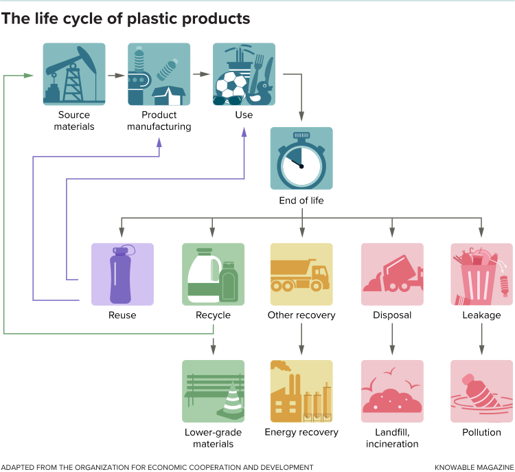
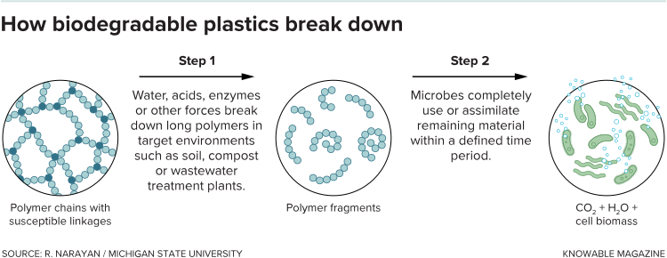
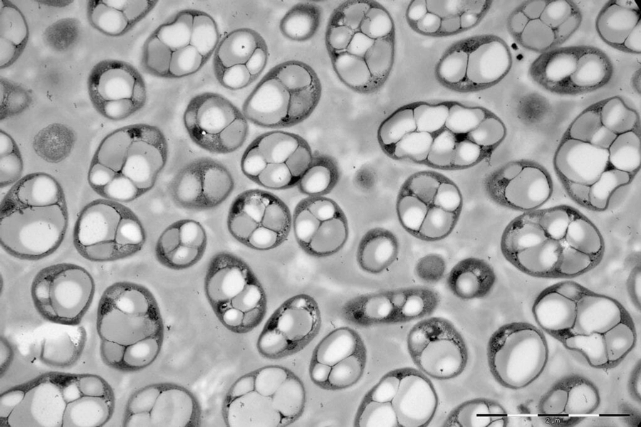

塑料是一种奇迹材料。它便宜，轻便耐用。但它之所以如此伟大的原因也是为什么它可能是最糟糕的。这是如此便宜，以至于它被丢弃了。它非常耐用，可以坚持几个世纪，填充垃圾填埋场并渗入海洋，在那里它被吃掉并在食物链中传播。塑料分解成微小的碎屑，填充鸟和鱼的胃，导致它们饿死，并消除有毒污染物，这些污染物在摄入时会对野生动物造成毒害。
虽然我们可以而且应该使用更少的塑料，但我们可能无法完全放弃它。例如，塑料包装可以保持食物新鲜 - 对于喂养世界至关重要。因此研究人员和公司一直在开发可生物降解的材料版本。他们正在从工厂生产这些材料，并且 - 在一切都被回收并且没有浪费的时候推动未来 - 甚至是食物残渣和污水。与传统塑料不同，传统塑料即使在分解成较小的碎片时也能保持其化学结构，这些可生物降解的塑料会分解成能够安全地重新融入环境的分子。
“合成塑料像岩石一样分解 - 它们变得越来越小，”亚利桑那州立大学的生物物理学家Taylor Weiss说。 “可生物降解的塑料像木头一样分解。”
但并非所有可生物降解的塑料都是平等的，而且很大的挑战是设计或识别适合该工作的材料。

更好的塑料
许多环境友好的塑料已经在市场上出售，包括塑料杯和由植物制成的瓶子。与传统的石油基塑料相比，这些生物塑料是一种改进。它们的碳足迹较小 - 它们不释放被化石燃料锁定的额外碳 - 并且基于可再生资源。但仅仅因为某些东西是由植物制成并不意味着它是可生物降解的：一些生物塑料不是，而一些石油基塑料，密歇根州立大学化学工程师Ramani Narayan说。
塑料由称为聚合物的长分子链组成，由重复的亚基组成。它们是否可生物降解取决于该链的强度。对于普通塑料，如袋子和瓶子中使用的聚乙烯和聚丙烯，或通常称为聚苯乙烯泡沫塑料的聚苯乙烯，链条的链环特别强。
“它就像一串珍珠，”斯坦福大学化学工程师柯特弗兰克说。 “这些珍珠通过碳 - 碳键连接，这些碳键非常强大。”
可生物降解塑料中的链接较弱，通常涉及称为酯的化学基团。水，酸和酶 - 包括由某些微生物产生的那些 - 可以破坏这些酯键，最终留下可以被自然消耗的二氧化碳和水等化合物，以及可以作为燃料捕获或供给微生物的甲烷。

但纳拉扬说，生物降解本身并不一定有意义。 （“人类的粪便是可生物降解的，”他说。“这不允许你把它扔到任何地方。”）不同的材料在不同条件下生物降解，如果这些条件不可用，那么材料可能同样糟糕普通塑料。例如，那些日益熟悉的基于玉米的杯子 - 由聚乳酸或PLA制成 - 被标记为可生物降解的，这在技术上是正确的。但PLA只在工业堆肥中心发生故障。因此，如果没有收集和堆肥的基础设施，单独的生物降解可能不像看起来那么有益。
也不能用可生物降解的塑料替代所有塑料。对于某些应用，例如PVC管或防弹背心，您最不希望的是材料发生故障。关键是为正确的应用开发合适的材料，这也增加了其他挑战。例如，模塑，成型和加工可生物降解塑料所需的温度通常接近其降解的温度。 “使它们可生物降解的化学联系也使它们难以加工，”弗兰克说。 “这就是难题。”
例如，为了提高降解温度，研究人员可以添加防止或阻止聚合物链分解的化学物质。或者他们可以使用策略降低熔化温度，例如使用称为增塑剂的添加剂。
虽然为每种应用开发合适的加工技术需要时间，但研究人员正在努力。弗兰克和斯坦福大学的土木工程师萨拉比林顿正在开发一种可生物降解的聚苯乙烯泡沫塑料，用作建筑保温材料。佐治亚大学的研究人员正在使用聚羟基链烷酸酯或PHA（它们在比PLA更广泛的条件下可堆肥）来制造甚至在海洋中都能降解的塑料吸管。百事公司和雀巢公司等公司已经宣布计划将PHA用于包装和瓶装水，加州一家名为Cove的新创公司的目标是在PHA瓶中销售水，并称其在海洋和垃圾填埋场中会降解。
走完整圈
然而，其他研究人员和公司正在寻找更好的方法来生产塑料。目前市场上大多数表面上可生物降解的塑料 - 通常是PLA–都是由玉米，马铃薯和甘蔗等粮食作物制成。微生物咀嚼来自这些作物的糖，生产乳酸，PLA的组成部分。
纳拉扬说，这可能是一种很好的方法，前提是基础农业实践是可持续的。基础设施已经存在，农村农业经济可以受益，根据他的计算，全球仅有1％的耕地可以种植足够的作物，以满足2016年的世界塑料生产。
尽管如此，批评人士还是担心与食品供应的竞争：玉米生产的乙醇燃料已被指责推高食品价格。为了避免潜在的问题，Weiss开发了一种从阳光和两种微生物制造塑料的技术。 1号微生物是一种蓝藻，通过光合作用将太阳光转化为糖蔗糖。 （通过在称为藻酸盐的凝胶中培养微生物，Weiss限制蓝藻繁殖，从而迫使其将所有能量投入到蔗糖生产中。）然后将糖喂给2号微生物，这是一种转化蔗糖的细菌（作为为自己储存额外能量的方法成为一种称为PHB的PHA。

但更好的是利用废品。哥伦比亚大学的环境工程师Kartik Chandran正在将污水处理厂的垃圾和污水污泥转化为燃料和有用的产品，包括塑料。他建立了生物反应器，使用混合微生物首先将废物分解成挥发性脂肪酸。然后，在第二步中，另一种细菌混合物将这些酸缝合在一起以产生PHA。 “对我来说，这些不是废物流，”钱德兰谈到污泥和垃圾。 “这些是富集的流 - 这些是部分精炼的流。将它们倾倒出去甚至投入更多资源进行清理是毫无意义的。“
像加拿大的Genecis和加利福尼亚的Full Cycle这样的初创公司也在从有机废物中制造PHA。加州的芒果材料公司（其顾问委员会包括弗兰克）正在使用微生物从废水处理厂和垃圾填埋场等设施中捕获的甲烷中生产PHB。
然后可以将这些塑料进行堆肥，这是闭环生产循环的一部分，其中不浪费任何东西。 Chandran设想未来在每个社区都有收集和处理废物的设施，不仅仅是塑料，还有燃料和其他材料。 “它可能会触及我们所做的一切以及我们的生活方式，”他说。 “这是无所不包的。”